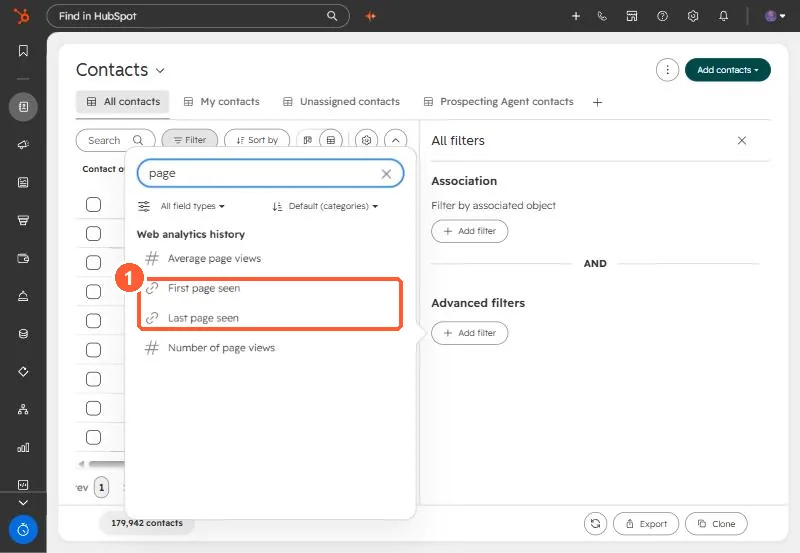
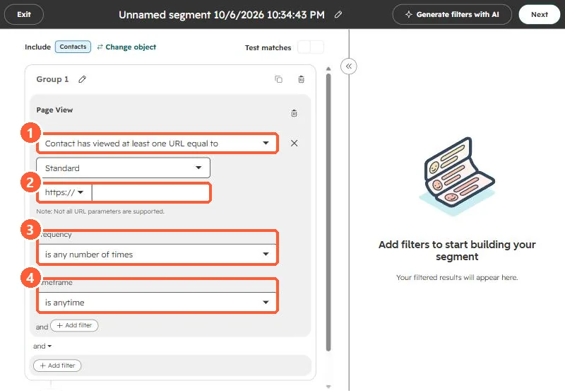
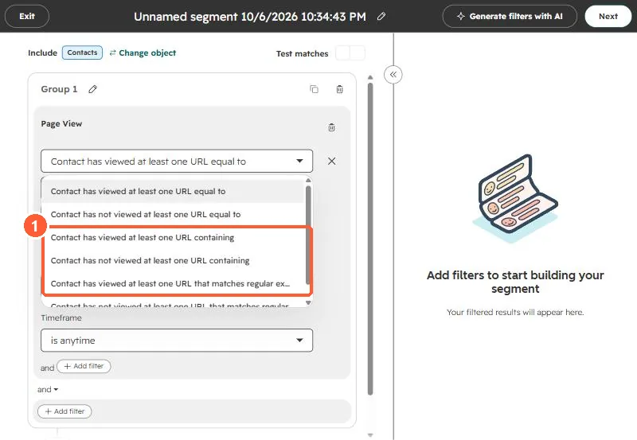

Short answer
Index filters only offer First page seen and Last page seen, and per-page view history is not a contact property. So a filter on those finds only contacts whose first or latest visit happened to be that page. When I was asked for everyone who viewed a page at least once, that approach found a handful. A segment's Page view event filter, "Contact has viewed at least one URL equal to", checks every page view on the timeline, with frequency and timeframe options. HubSpot's limit is 2,048 characters for the URL, and wildcards only work with the regular expression option.
1. The wrong tool
In the Contacts index, the page-related filters are page view counts and two URL properties. In my demo:


When I used those to find contacts who had viewed a landing page, some matches were on the page itself and some came through campaign email clicks, and all of them were someone's first or last page. Anyone who viewed it in the middle of their history was missed.
2. The right tool
Create a contact segment in Segments, add a filter, open Events, and pick Page views, then Page View.




3. HubSpot's notes
- Equal to needs the exact URL, up to 2,048 characters. Choose Standard or UTM only.
- Wildcards only work with the regular expression operator.
- HubSpot's own example uses "is greater than or equal to 2 times" for repeat visits to a high intent page.
Page views only exist for visitors the tracking code identified. See detecting the tracking code.